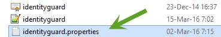
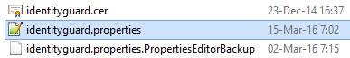
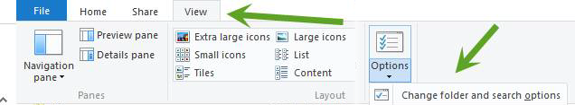
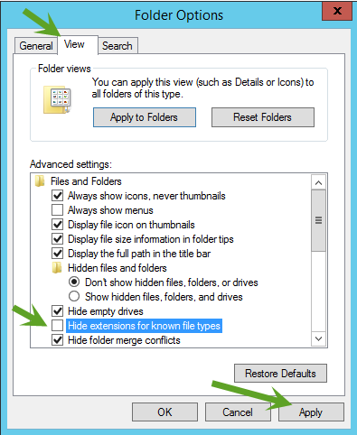

|
IdentityGuard Server 12.0 Administration Guide |
|
IdentityGuard Server 12.0 Administration Guide |
Some Entrust IdentityGuard configuration could require editing of configuration files. If you are using Microsoft Windows to work with Entrust IdentityGuard files, ensure that the file extensions are visible in Windows Explorer. By default, file extensions are not shown, and this can cause difficulty finding the correct files.
For example, in the following screen capture, file extensions are hidden. The file that looks like identityguard.properties is actually the backup file identityguard.properties.PropertiesEditorBackup. Editing that file will not have the desired result.

If you show file extensions, you see the full file names, and you will be able to locate the correct file to edit.

To show file extensions in Windows Server 2012R2
1. Open a Windows Explorer window.
2. From the View menu, selection Options, and then select Change folder and search options from the drop-down list.

3. On the Folder Options dialog box, click the View tab.
4. In the Advanced Settings list, deselect the Hide extensions for known file types check box.

5. Click Apply, and then click OK to close the dialog box.